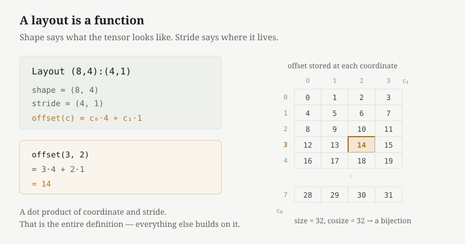
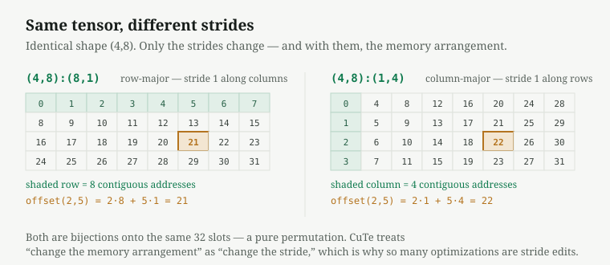
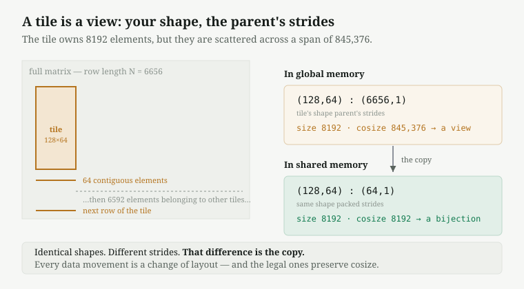
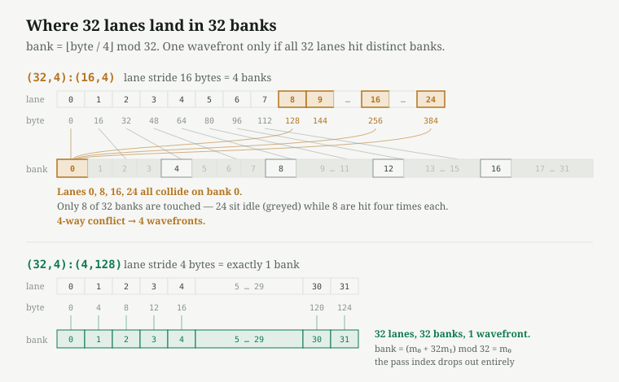
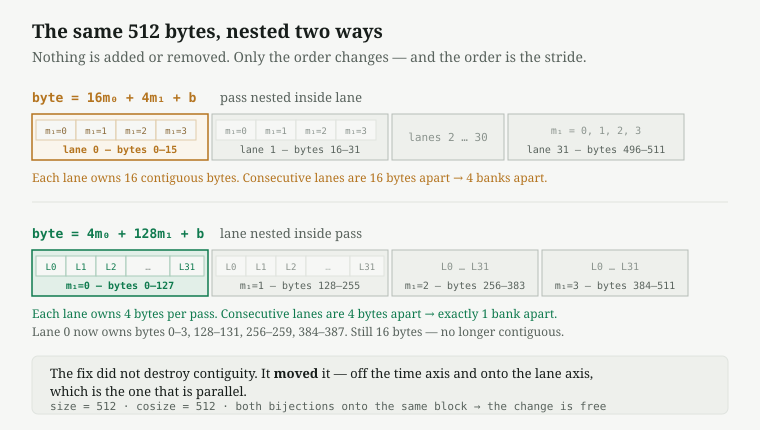

Layout algebra in CuTe DSL
CuTe DSL is often described as a replacement for CUDA C++. It isn't one. It is CUTLASS's Python authoring layer, and it compiles through MLIR and NVVM to the same PTX and SASS, so it does not abstract away the hardware — it shortens the edit-compile-measure cycle.
Strip the syntax from any serious CuTe kernel optimization and what remains is L2 residency, pipeline synchronization, bank conflicts, wave quantization. The same reasoning I already do in CUDA, one level of abstraction up. Which means most of what I know transfers, and the part that doesn't is layout algebra.
That is the part worth the time. This post covers layouts as functions, the size/cosize relationship, nested modes, and tiles as views, then applies all four to one concrete optimization: removing a four-way shared-memory bank conflict from a scale-factor layout on SM120.
Why layouts are an object
In CUDA C++ the index arithmetic is written inline:
float x = A[row * lda + col];That is workable as long as the mapping fits in your head. It stops being workable when a kernel has a swizzled tile in shared memory, a fragment distributed across 32 lanes in the order the MMA instruction demands, and a TMA descriptor governing the copy between them. Four coordinate systems are live at once, and index bugs account for a large share of GEMM bugs.
CuTe makes the mapping a first-class object. Rather than writing the arithmetic, you construct a Layout and then compose, divide, and invert layouts algebraically. The optimization at the end of this post is a change to two integers, with a two-line proof that it costs nothing.
Layouts
A Layout is a pair of tuples, (Shape, Stride), denoting a function from a logical coordinate to a memory offset:

The shape describes the tensor; the stride describes where it lives. Two layouts with the same shape and different strides are the same logical tensor in two memory arrangements:

Because CuTe treats a change of memory arrangement as a change of stride, a large fraction of memory-layout optimizations reduce to stride edits. That is the design, not a coincidence.
Size and cosize
Two quantities characterize a layout. size is the number of logical coordinates, the product of the shape. cosize is the extent of the image, max offset + 1, and follows from pushing every mode to its maximum coordinate:
cosize is a span, not a count of stored addresses. The number of distinct addresses touched is a third quantity, and coincides with cosize only when the layout is a bijection. The useful reading is that cosize gives the size of the buffer required to hold everything the layout can reach, which is what makes it the right thing to check when deciding whether a layout change is safe.
| Relation | Interpretation |
|---|---|
| size == cosize | bijection — packed, nothing wasted or aliased |
| size < cosize | gaps — a strided view into something larger |
| size > cosize | aliasing — broadcast, deliberate replication |
Modes and nesting
A mode is one component of the shape/stride tuple. Modes nest, and a nested mode is still one mode: ((2,4),8) is rank-2, not rank-3, because mode 0 is itself a tuple. It describes a 2D tensor whose first axis, of extent 2 × 4 = 8, has been factored into a pair. Coordinates nest to match, as in ((1,3),5).
Rank counts top-level modes; depth measures nesting. The reason to factor an axis is that each factor receives its own stride. Hardware decomposes indices constantly — m = m₀ + 32m₁ when 32 rows map to the 32 lanes of a warp and m₁ indexes the iteration — and factoring is what allows the lane component and the iteration component to be strided independently. A flat axis admits only a single stride.
A stride of zero denotes broadcast:
((2,4),8):((1,0),2)
offset((1,3),5) = (1·1 + 3·0) + 5·2 = 11
size = 2·4·8 = 64
cosize = 1 + (2−1)·1 + (4−1)·0 + (8−1)·2 = 16Four coordinates map to the same address, an aliasing factor of 4: sixteen values stored, sixty-four coordinates reading them. The stride-0 mode contributes nothing to cosize because it cannot reach a new address. This is how CuTe expresses replication, and it is what a block-scaled format requires — one scale factor serving all sixteen elements of its micro-block at no additional memory cost.
Shape and stride answer different questions, and only the second one enters the arithmetic. The shape states how many coordinates exist; the stride states how far they reach.
Tiles as views
Consider a 128×64 tile of a matrix with row length N = 6656. One column step is one element; one row step skips an entire matrix row:
(128,64):(6656,1)
size = 8192
cosize = 1 + 127·6656 + 63·1 = 845,376size is smaller than cosize by a factor of 103. More than 99% of the span this layout covers belongs to neighbouring tiles.
The layout is nonetheless the tile's, not the matrix's. Its shape is (128,64), so it accepts only coordinates in that range; the matrix layout would be (M,6656):(6656,1), a different shape entirely. What the tile borrows from its parent is the stride:
(128,64) : (6656,1)
the tile's shape the parent's stridesThat pairing is what a view is, and it is the source of the discrepancy between the two numbers. The shape states what the tile owns; the strides state how it is distributed in the parent.

A CuTe tensor is a pointer together with a layout:
tile(0,0): ptr = A, layout = (128,64):(6656,1)
tile(0,1): ptr = A + 64, layout = (128,64):(6656,1)
tile(1,0): ptr = A + 128·6656, layout = (128,64):(6656,1)The layout captures the shape of the access pattern; the pointer selects the tile. Note that tile(i,j) indexes tiles rather than elements: tile (i,j) begins at element (128i, 64j), so its offset is 128i·6656 + 64j, with the tile dimensions supplying the multipliers. Each tile picks up whichever terms its own coordinate leaves nonzero, which is why tile(1,0) shows no contribution from the column term.
Placing the global and shared layouts side by side:
GMEM: (128,64):(6656,1) size 8192, cosize 845,376 view
SMEM: (128,64):(64,1) size 8192, cosize 8,192 bijectionThe shapes are identical and the strides differ. That difference is the copy. A swizzle is a third layout in the same family: same shape, same cosize, still a bijection, permuted strides. Every data movement is a change of layout, and the legal ones preserve cosize.
A bank conflict in a scale-factor layout
The optimization below is from Colfax Research's SM120 NVFP4 GEMM article. I reconstructed it from first principles as a test of whether the material above had actually landed. It had not, on the first two attempts.
In NVFP4, every 16 consecutive elements along K share one E4M3 scale byte, so the packed 4-bit weights are accompanied by a smaller tensor of scale factors. Call the A-operand scales SFA. For an A-tile of 128 rows by 64 K-elements, 64 elements along K is four micro-blocks of 16, so each row requires four scale bytes:
The MMA on SM120 is warp-level: one warp covers 32 rows at a time and repeats four times to reach 128. The row index therefore factors as m = m₀ + 32m₁, giving three modes.
| Mode | Extent | Meaning |
|---|---|---|
| m₀ | 32 | lane within the warp |
| m₁ | 4 | pass over the rows, 128 ÷ 32 |
| b | 4 | scale byte within the row |
Their product is 512, matching the footprint. The distinction between m₀ and m₁ is the operative one: m₀ is spatial, with all 32 values live simultaneously across lanes, while m₁ is temporal, with passes occurring in sequence. Two kinds of index with different access characteristics, which is precisely why the row index is factored rather than flat.
Since the element here is a single byte, the layout offset is already a byte offset. That would not hold for the E2M1 weights, which pack two elements per byte.
The original layout
(32,4):(16,4) with b at stride 1
byte = 16m₀ + 4m₁ + bEach lane holds a private, contiguous 16-byte block; within it m₁ selects a 4-byte group and b selects a byte. The nesting is pass-inside-lane.
Shared memory is organized as 32 banks of 4 bytes, interleaved, so byte address A resides in bank ⌊A/4⌋ mod 32. A single instruction serves all 32 lanes in one wavefront only if the lanes address 32 distinct banks. All lanes issue simultaneously at a common m₁, each at its own m₀:
The lane stride of 16 bytes is four banks, so the lanes address banks 0, 4, 8, …, 28 and then wrap.

Twenty-four of the thirty-two banks are never addressed, and the remaining eight are addressed four times each. Lanes 0, 8, 16 and 24 all fall on bank 0. The result is a four-way conflict: four wavefronts instead of one, on every scale read in the mainloop.
The fix
Give the mode that varies across lanes a stride of exactly one bank:
(32,4):(4,128)
byte = 4m₀ + 128m₁ + b
bank = ⌊(4m₀ + 128m₁)/4⌋ mod 32 = (m₀ + 32m₁) mod 32 = m₀Lane m₀ addresses bank m₀. The pass index drops out of the bank calculation entirely, since 32m₁ mod 32 = 0 for all m₁, so all four passes are conflict-free by construction rather than on average.
The stride of 128 is forced rather than chosen. Extent and stride are independent: m₁ still takes only four values, and 128 is the distance the address moves when it increments. Once each lane occupies 4 bytes, one pass spans 32 × 4 = 128 bytes, so the next pass must begin at 128 to avoid overlapping. The stride of a mode is the size of what precedes it.
Contiguity
Lane 0 previously held bytes 0–15 contiguously and now holds bytes 0–3, 128–131, 256–259 and 384–387. The same 16 bytes, no longer adjacent. This costs nothing, because contiguity is only useful along the mode that is read together. At any instant each lane requests a single byte, its own row's scale for the current pass. Lane 0's bytes 1, 2 and 3 are not read by that instruction; they are needed on later passes, by different instructions. Adjacency along the temporal axis is not something the hardware can exploit.
| Layout | Contiguous along | Suited to |
|---|---|---|
| 16m₀ + 4m₁ + b | m₁,b — a lane's own 16 bytes | one lane reading 16 bytes at once |
| 4m₀ + 128m₁ + b | m₀ — across lanes | 32 lanes reading one byte each, simultaneously |

Contiguity is not destroyed but relocated, onto the axis that is traversed in parallel. This is the same rule as coalescing in CUDA C++, where A[tid] outperforms A[tid*16] because consecutive lanes should address consecutive locations. The original layout is A[tid*16] in different notation, which is exactly why I did not recognize it.
Why the change is free
A stride change is safe only if it permutes bytes within an unchanged footprint. A change in span would alter the TMA transaction size, making it a different copy rather than a reordering:
Both equal each other and equal size, so both are bijections onto the same 512-byte block. The box shape and transaction size are unchanged and only the ordering within the atom moves. Four times fewer wavefronts at no cost.
Summary
The general procedure:
- Write the offset as a dot product of coordinate and stride.
- Identify the mode that varies across lanes; it alone determines bank behaviour.
- Give that mode a stride of one bank, 4 bytes.
- Let the remaining strides follow from the packing constraint.
- Verify
cosizeis unchanged and both layouts are bijections.
The second step is the one that required rewiring rather than new information. The habitual question from CUDA C++ is whether an access is contiguous. The correct question is which mode it is contiguous along, and whether that is the mode the warp traverses in parallel.
Exercises
By hand first, then against cute.make_layout.
(4,8):(8,1)— the offset of(2,5), and is it row- or column-major?(4,8):(1,4)— the offset of(2,5). Same logical tensor, differing in what?((2,4),8):((1,0),2)—size,cosize, aliasing factor, and the number of values physically stored.- A 128×64 tile, row-major, in a matrix with N = 6656. Write the layout. Is it a bijection, and what does that imply about the copy it requires?
- The derivation above: tabulate banks for
16m₀ + 4m₁ + b, state the collision rule, count the wavefronts, repeat for4m₀ + 128m₁ + b, and showcosizeis unchanged.
Further work
Two pieces of the fundamentals are not covered here: composition, meaning how tiled_divide and local_tile derive a tile layout from a matrix layout, which was done by hand above; and TV layouts, the formal description of which lane holds which element of an MMA fragment. The three-mode decomposition used in the bank-conflict example is an informal instance of one.
The application I want to take this toward is a W4A16 NVFP4 GEMM — 4-bit weights against bf16 activations, at the small-M shapes characteristic of decode. In that regime the kernel is entirely weight-bandwidth-bound, the tensor cores are largely idle, and the determining factor is scheduling: how many CTAs are resident, and whether enough memory requests are in flight to saturate DRAM. That is a good match for a DSL in which tilings and schedules are inexpensive to iterate on.